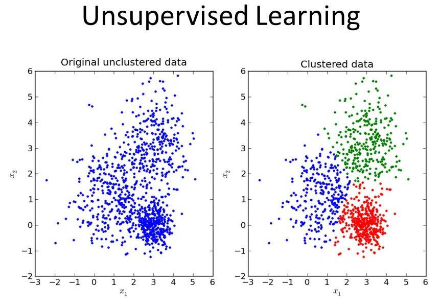

Hello Everyone !!!
Thanks for continuing with this post.
Before we get started and dive deep into the Machine Learning Algorithms and their working, let's get to know what are the various types of Machine Learning Algorithms first.
Machine Learning Algorithms can broadly divided into two categories:
- Supervised Learning
- Unsupervised Learning
Supervised Learning:
This is a type of Machine Learning in which all the data points in the dataset are labelled i.e. for every input x there is an output y. The aim in such type of Machine Learning Algorithms is to find/estimate the label of new data points using the hypothesis formed using the given labelled dataset.
One good example of this type of Machine Learning is Handwritten Digit Recognition using MNIST dataset.

In this, the aim is to predict the labels for the images of digits using the hypothesis formed by training on the training dataset. The training dataset is image of digits as 28x28 matrix each accompanied with the corresponding label i.e. the digit in the image.
Another very common example of this type of Machine Learning is Breast Tumor Problem. In this problem the aim is to classify that whether the Tumor is Malignant or Benign based upon its size and using the hypothesis learned from the training data.
One more thing to learn before we move ahead. We have been talking a lot about the hypothesis in the above discussion. But what is it afterall ??
A Hypothesis can be thought of a function, something like, for example,
y = mx + b
where,
x: is the input data or the features in a dataset
y: represents the labels in the dataset
m & b: represent the slope and the y-intercept or in terms of Machine Learning we call these as Hyperparameters.

Hence, the Hypothesis is formed by learning these Hyperparameters on the training data. For new data points, we use this Hypothesis to predict the label or if we see in terms of the equation shown above, the aim is to get values of y corresponding to new values of x using the trained Hyperparameters.
Unsupervised Learning:
So after Supervised Learning, we move to second type of Machine Learning Algorithms called the Unsupervised Learning. So waht is Unsupervised Learning ?? Yes, you guessed it right. In this, we don't have any labelled data. Hence, given an unlabelled dataset, we try to find patterns in the data maybe by clustering the data with similar features or finding some pattern in the data.
Let us consider an example of Unsupervised Learning. Say, if we are given an unlabelled dataset of images of shoes, shirts and pants i.e. no labels for the images as in MNIST dataset.
Hence, how do we find out the label for a new input image ?? One way is that we group the thing looking like the same in images like group shoes , shirts and pants seperately and classify the new image to one of the groups.

So, this way without having the labels, we have classified the new data.
Did you noticed that in above discussions, we used a terminology "Classification" and "Classifier". I think it'll be good for us to know about these now than later on.
Classification:
Classification, as the name suggests, is used for classiying the data points into labels or classes. One example of classification is predicting the label for the images from MNIST dataset or telling if the Tumor is Malignant or Benign based on its size.

In the above figure, we can see that the blue cross on the bottom defines that the tumor is Benign and on the top with red cross it represents that it is Malignant.
So, this clearly shows that the tumor has been divided into two classes i.e. either Malignant or Benign, Yes or No, 0 or 1 based on the tumor size.
Regression:
Regression, unlike Classification, is used when we need a continuous output value rther than discrete value. For example, given the price of a house corresponding to its square foot area, if we need to find the price of a new house, then we will use Regression as we don't want a classification like a Yes or No or a label, but we want a continuous valued output i.e the Price.

In the above figure, we can see that each point on the graph represents a (square footage, cost) value. The line represents the hypothesis formed using the trainig data. Now, say for example, we want to estimate the price of a house with square footage of 1000. So, we can just plot a point on the hypothesis line and get the corresponding cost value.
Now that we have covered some of the basic concepts in Machine Learning, I think its now time to move to our first Machine Learning Algorithm, Linear Regression.
Great work on completing this tutorial, let's move to the next tutorial in series, Introduction to Machine Learning: Linear Regression
For more projects and code, follow me on Github
Please feel free to leave any comments, suggestions, corrections if any, below.
comments powered by Disqus